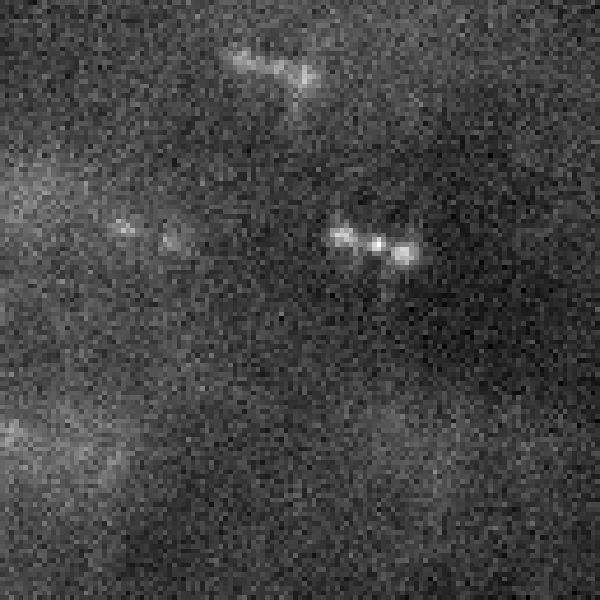
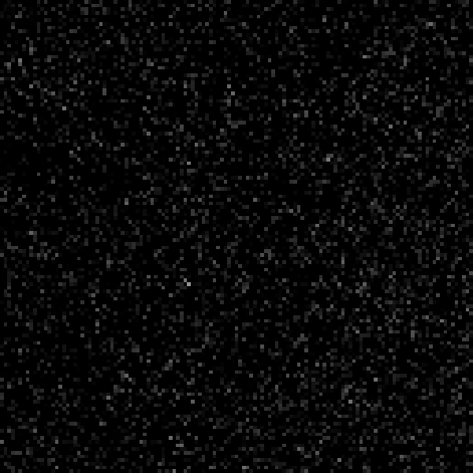
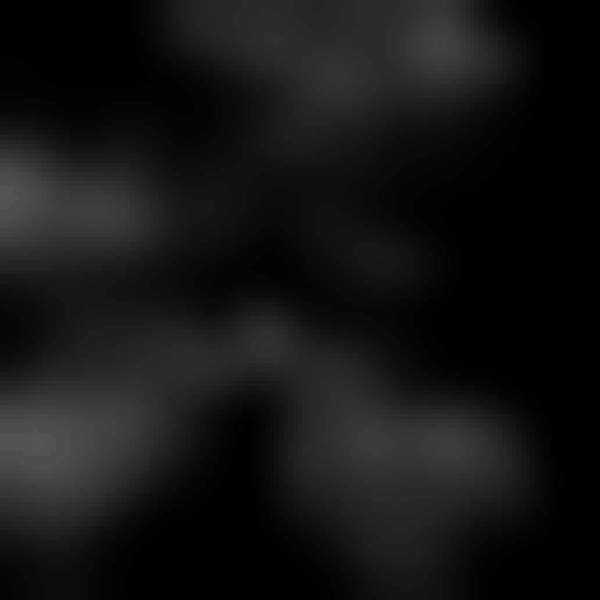
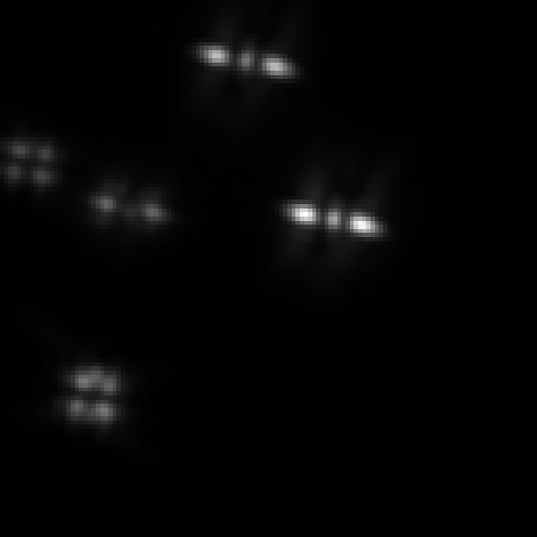
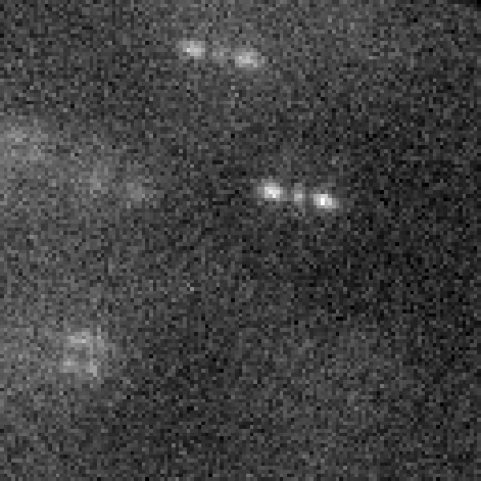
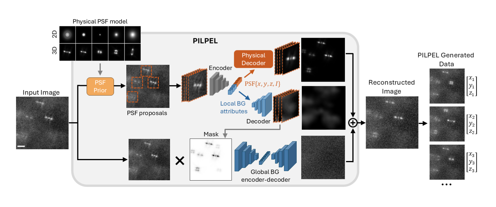

PILPEL
Physics-Informed Latent Particles for Emitter Localization
Self-supervised generation of realistic training data enables nanoscale localization in challenging conditions
bioRxiv preprint · 2026
1Dept. of Biomedical Engineering, Technion
2Carnegie Mellon University
3Russell Berrie Nanotechnology Institute, Technion
4Dept. of Electrical & Computer Engineering, Technion
@article{goldenberg2026pilpel,
title = {Self-supervised generation of realistic training data enables
nanoscale localization in challenging conditions},
author = {Goldenberg, Ofri and Daniel, Tal and Xiao, Dafei and
Shalev Ezra, Yael and Alalouf, Onit and Shechtman, Yoav},
journal = {bioRxiv},
year = {2026},
doi = {10.1101/2025.07.16.665148}
}
A physics-informed generative model that learns to generate fully-labeled, photorealistic training data directly from raw experimental frames, bridging the simulation-to-experiment gap in localization microscopy.




reconstructionInput image
PILPEL
Generated training data
Abstract
Localization microscopy has overcome the diffraction limit, i.e. the conventional resolution limit of a microscope, enabling nanoscale biological imaging by precisely determining the positions of individual emitters such as single fluorescent molecules. However, the performance of deep learning methods, commonly applied to these tasks, depends significantly on the quality of training data, typically generated through simulation. Creating simulations that perfectly replicate experimental conditions remains challenging, resulting in a persistent simulation-to-experiment gap. To bridge this gap, we propose a physics-informed generative model leveraging self-supervised learning directly on experimental data. Our model extends the Deep Latent Particles (DLP) framework by incorporating a physical model of the Point Spread Function (PSF; the image of a single point source in the microscope) into the decoder, enabling it to disentangle learned realistic environments from emitters. Trained directly on unlabeled experimental images, our model intrinsically captures realistic background, noise patterns, and emitter characteristics. The decoder thus acts as a high-fidelity generator, producing fully labeled, realistic training images with known emitter locations. Using these generated datasets significantly improves the performance of supervised localization networks, particularly in challenging scenarios such as complex backgrounds and low signal-to-noise ratios. We demonstrate our approach on a variety of experimentally measured microscopy data, including super-resolution imaging in 2D and 3D and particle tracking in live cells, showing substantial improvements in localization precision and emitter detection.
Simulation-to-experiment gap
Single-molecule localization microscopy
Physics-informed generative model
Self-supervised learning
Architecture

Encoding-decoding scheme with a latent representation of PSF-objects. The model divides the input image into overlapping patches and performs template matching using a precomputed PSF dictionary (standard 2D or engineered 3D PSFs, top left) to propose candidate emitter locations. Patches around these locations are then processed by an encoder that generates disentangled latent vectors encoding spatial coordinates, intensity, and appearance features of the local background. A decoder reconstructs the image using a physics-based PSF generator and a CNN-based local-background generator. These generated patches, along with a separately modeled global background, are combined to form the final reconstructed image. The entire system is trained end-to-end within a VAE framework, balancing reconstruction accuracy and latent regularization. Because the coordinates passed to the physical decoder are the ground truth of the generated image by construction, re-sampling them together with the latent attributes and passing them through the decoder provides new labeled images, with known {x, y, z} per emitter, that serve as training data for supervised localization networks. Scale bar, 2 µm.
Results
PILPEL generalize across datasets
2D STORM of microtubules
3D STORM of mitochondria
3D DNA loci in yeast cells
Acknowledgments
This work builds on the Deep Latent Particles framework and the DeepSTORM / DeepSTORM3D localization networks, with experimental point spread functions estimated by VIPR phase retrieval. It uses experimental datasets spanning 2D STORM of microtubules, 3D STORM of mitochondria, 3D DNA loci in yeast, and 3D chromosomal loci in E. coli. Full experimental details and analysis appear in the Supplementary Material.
This page is adapted from a webpage design by Tal Daniel.
Citation
@article{goldenberg2026pilpel,
title = {Self-supervised generation of realistic training data enables
nanoscale localization in challenging conditions},
author = {Goldenberg, Ofri and Daniel, Tal and Xiao, Dafei and
Shalev Ezra, Yael and Alalouf, Onit and Shechtman, Yoav},
journal = {bioRxiv},
year = {2026},
doi = {10.1101/2025.07.16.665148}
}